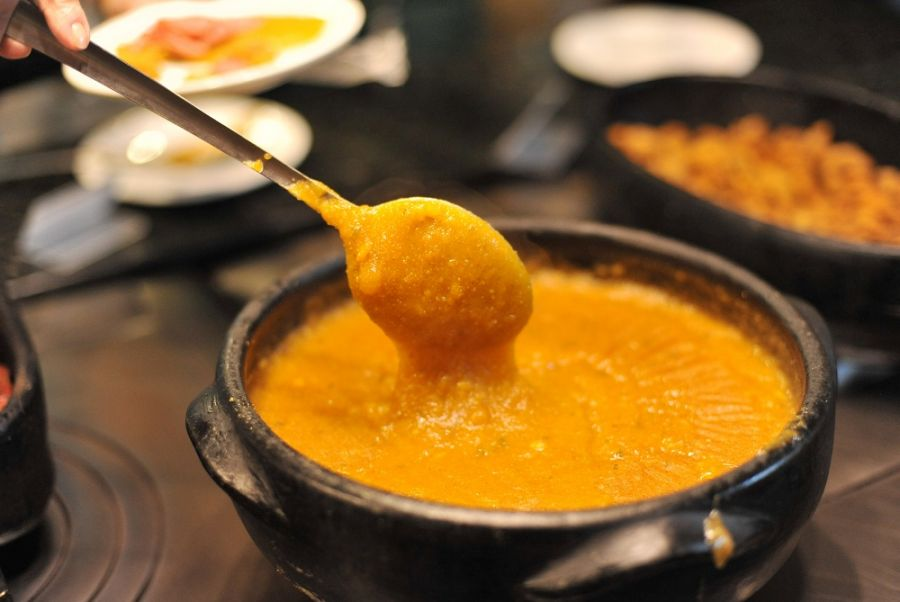
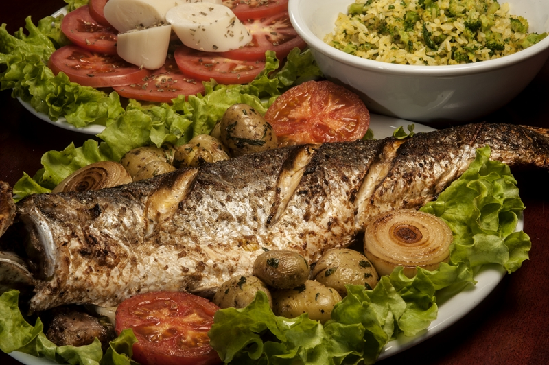

Florianópolis é uma ilha para quem gosta de natureza, praias, trilhas e uma boa comida típica.
Com sua gastronomia incrivel a beira do mar, Floripa oferece em todos seu cantos da ilha praias maravilhosas com restaurantes para todos gostos.
Seu carro chefe hoje é a sequência de camarão
Pirão de Peixe
Tainha grelhada
